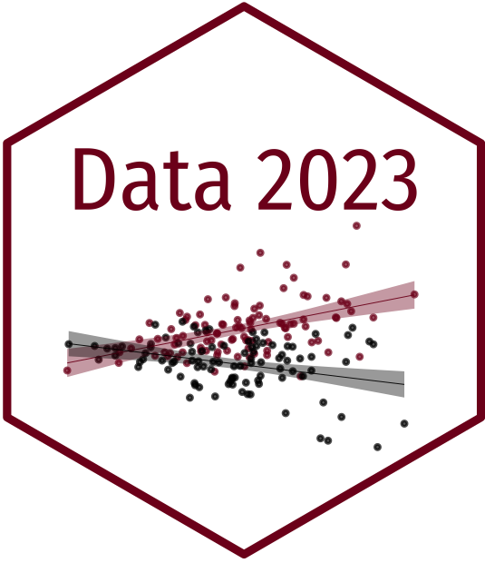

04:00
Causality
Data Analytics and Visualization with R
Session 4
Viktoriia Semenova
University of Mannheim
Spring 2023
Warm Up
Your GitHub Stats ü§ì

Quiz: Which of these statements are correct?
- Regression line represents a conditional mean of the explanatory variable X given the value of the outcome variable Y.
- Extreme values of correlation coefficient (i.e. close to -1 or 1) imply that there is a large substantive effect of X on Y.
- Correlation between X and Y implies there is a causal relationship between them.
- Causal relationship between X and Y implies there is a correlation between them.
- Causal relationship between X and Y implies there is an association between them.
Association vs. Correlation

Causality
Data Generating Process
- An unknown process in the real world that “generates” the data we are interested in
- In social sciences, DGP is often not very precise
- Our understanding of DGP comes from the theory and subject knowledge
Causality
A variable \(X\) is a cause of a variable \(Y\) if \(Y\) in any way relies on \(X\) for its value…. \(X\) is a cause of \(Y\) if \(Y\) listens to \(X\) and decides its value in response to what it hears (Pearl, Glymour, and Jewell 2016, 5–6)
This incorporates:
- association between \(X\) and \(Y\)
- time ordering: cause precedes outcome
- nonspuriousness: there is plausible relationship
Causal effect is the change in variable Y that would result from a change in variable X
Example: Boston Commuters Experiment
- Question: How does intergroup contact impact the immigration attitudes?
- Unit of analysis (indexed by \(i\)): individuals
- Treatment variable \(T\): exposure to Spanish-speakers on a train platform (yes or no)
- Treatment group (treated units): individuals exposed to Spanish-speakers
- Control group (untreated units): individuals not exposed to Spanish-speakers
- Outcome variable \(Y\): immigration attitudes
- Let’s simplify for now and say \(Y\) is binary: pro- or anti-immigration
Causal Effects & Counterfactuals
- Two potential outcomes:
- \(Y_{i}(1)\): would commuter \(i\) report pro-immigration attitudes if exposed to Spanish-speakers (\(T = 1\))?
- \(Y_{i}(0)\): would commuter \(i\) report pro-immigration attitudes if not exposed to Spanish-speakers (\(T = 0\))?
- Causal effect: \(Y_{i}(1) -Y_{i}(0)\) (aka treatment effect)
- \(Y_{i}(1) -Y_{i}(0) = 0\): exposure to Spanish-speakers has no impact on attitudes
- \(Y_{i}(1) -Y_{i}(0) = +1\): exposure to Spanish-speakers leads to pro-immigration attitudes
- \(Y_{i}(1) - Y_{i}(0) = -1\): exposure to Spanish-speakers leads to anti-immigration attitudes
Potential Outcomes
| Attitude if Treated | Attitude if Control | |
|---|---|---|
| Jack | Pro-immigration | Anti-immigration |
More formally:
| \(Y_{i}(1)\) | \(Y_{i}(0)\) | |
| Jack | 1 | 0 |
Fundamental Problem of Causal Inference
| Causal Effect | |||
| \(Y_{i}(1)\) | \(Y_{i}(0)\) | \(Y_{i}(1) - Y_{i}(0)\) | |
| Jack | 1 | 0 | 1 |
- We cannot observe \(Y_{i}(1) - Y_{i}(0)\) in real life though:
- We only observe one of the two potential outcomes \(Y_{i}(1)\) or \(Y_{i}(0)\)
- To infer causal effect, we need to infer the missing counterfactuals
Multiple Units
| \(Y_{i}(1)\) | \(Y_{i}(0)\) | \(Y_{i}(1) - Y_{i}(0)\) | |
| Jack | 1 | 0 | 1 |
| Dan | 0 | 0 | 0 |
| Anne | 1 | 0 | 1 |
| Yao | 0 | 0 | 0 |
| Judy | 0 | 1 | -1 |
- Individual treatment effects: value of \(Y_{i}(1) - Y_{i}(0)\) for each \(i\)
- Average treatment effect: mean of all the individual causal effects \(ATE = \frac{1 + 0+ 1+0+(-1)}{5} = 0.2\)
Back to Real World…
| \(Y_{i}(1)\) | \(Y_{i}(0)\) | \(Y_{i}(1) - Y_{i}(0)\) | |
| Jack | ? | 0 | ? |
| Dan | 0 | ? | ? |
| Anne | 1 | ? | ? |
| Yao | 0 | ? | ? |
| Judy | ? | 1 | ? |
Randomized Experiment as a Solution
- Each unit’s treatment assignment is determined by chance
- Randomization ensures balance between treatment and control group:
- they are identical on average
- we shouldn’t see large differences between treatment and control group on pretreatment variable
ATE vs. Difference-in-Means
We want to estimate the average causal effects over all units:
\[\text{Average Treatment Effect} = \frac{\sum^n_{i=1} (Y_{i}(1) - Y_{i}(0))}{n}\] But we can only estimate instead:
\[ \text{Difference in means} = \overline Y_{i}(1) - \overline Y_{i}(0) \]
This is a pretty good estimate of ATE if randomization worked!
Casual Diagrams
Directed Acyclic Graphs (DAGs)
Nodes: variables in the DGP
Arrows: causal relationships in the DGP (associations)
Direction: from the cause variable to the caused variable
Directed: Each node has an arrow that points to another node
Acyclic: You can’t cycle back to a node (and arrows only have one direction)
Graph: Well…it is a graph.
Major Types of Association
Confounding
(Fork)
Common cause
Causation
(Chain)
Mediation
Collision
(Inverted Fork)
Selection / endogeneity
Confounding
Effect of money on elections

Find the part of campaign money that is explained by quality, remove it.
Find the part of win margin that is explained by quality, remove it.
Find the relationship between the residual part of money and residual part of win margin. This is the causal effect.
Campaign Example

Collider
Height is unrelated to basketball skill… among NBA players
 - Colliders can create fake causal effects
- Colliders can create fake causal effects
- Colliders can hide real causal effects
Causal Identification
DAGs help us with the process of identification
Causal effect is identified if the association between treatment and outcome is properly stripped and isolated
Identification implies that:
- All alternative stories are ruled out
- We have enough information to answer a specific causal inference question
Sometimes we cannot identify the effect with our data alone
Studying Example
